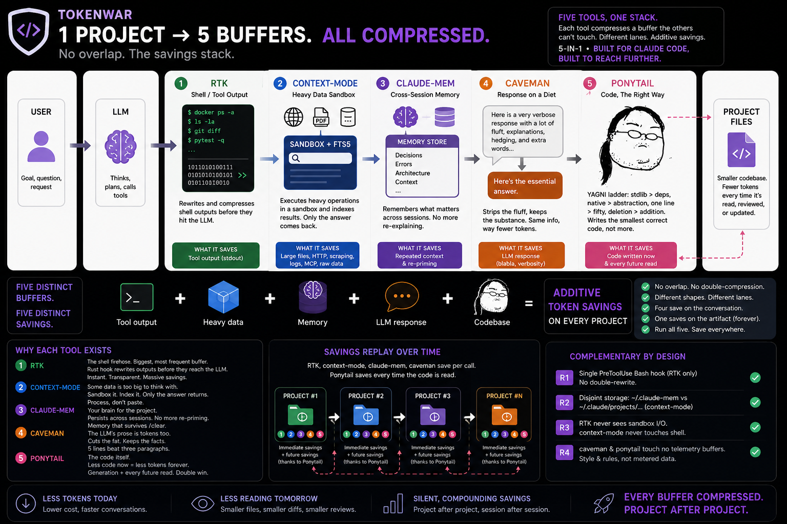

Five tools, five buffers, zero overlap. None is the star — the genius is running all five at once. 5-in-1.

Five lanes, none double-processed. Four save on the live conversation (once per call); the ponytail lane saves on the artifact on disk — replayed on every future read (review · diff · grep · next session). Different shapes of saving, same stack.
Compresses what the model says to the user. Drops articles, filler, hedging — keeps technical substance exact.
Why: the model's prose is tokens too — a 5-line answer beats three paragraphs, every turn.
Rewrites shell commands at the hook level. Compressed stdout enters the model context instead of raw output.
Why: tool output is the heaviest, most frequent buffer — the firehose is where the tokens actually are. Biggest measured saver.
Offloads heavy ops (HTTP, large files, MCP) into a sandbox. Only the answer enters context. FTS5 indexes everything.
Why: one large read can blow the whole window — some payloads should be processed, never read.
Persists session knowledge across /clear and restarts. Recallable next session — no re-explaining.
Why: the most expensive tokens are the ones you'd otherwise pay twice, re-priming every session.
The lazy-senior-dev ruleset. A YAGNI ladder — stdlib before custom, native before dependency, one line before fifty — so the model writes the smallest correct code, not an over-engineered one.
Why: the cheapest code to maintain is the code never written — it saves at generation and on every future read.
None of these is the headliner. Each owns a buffer the others physically can't reach: RTK the tool firehose, context-mode the heavy-data sandbox, claude-mem the cross-session memory, caveman the response, ponytail the code on disk. One's a Rust hook, one's an MCP sandbox, one's a memory store, one's a response filter, one's a ruleset — different shapes, different lanes, which is exactly why they stack.
Run one and you compress one buffer. Run all five and nothing in the loop is left uncompressed — input, output, heavy data, memory, and the artifact itself. That's the 5-in-1.
Honest accounting: RTK / context-mode / claude-mem report real telemetry; caveman and ponytail are presence-only (a style nudge and a prompt include — no metered buffer), so they show on, never a fabricated number. Measure ponytail by A/B-ing /ponytail on vs off. Ruleset: DietrichGebert/ponytail.
| Rule | What tokenwar check.sh verifies | Verdict |
|---|---|---|
R1 |
Single PreToolUse Bash hook (RTK only — no double-rewrite) |
PASS ✓ |
R2 |
claude-mem writes ~/.claude-mem, context-mode writes ~/.claude/projects/<slug>/memory — disjoint sinks |
PASS ✓ |
R3 |
RTK targets tool stdout; caveman targets LLM output — disjoint buffers | PASS ✓ |
R4 |
All 4 tools installed at compatible versions | PASS ✓ |
Inside Claude Code:
/tokenwar status — health of the 5 tools/tokenwar upgrade — bump each to latest/tokenwar gain — token savings + monthly $ value/tokenwar doctor — full pipeline: status → check → gain
Statusline: [ctx 1.0.162] [mem 13.6.0] [rtk 42.8M] [caveman 25d22f8] [ponytail on]
Each tool is read from its own native telemetry—never fabricated. RTK alone saved $214.36 in API-equivalent Claude Opus 4.8 tokens (input-side, Mar–Jun 2026).
Savings are input-side (context offload). Valued at Claude Opus 4.8 $5/M + Codex $1.25/M input list prices.
Codex placeholder — edit gain.sh constants to match openai.com/pricing.